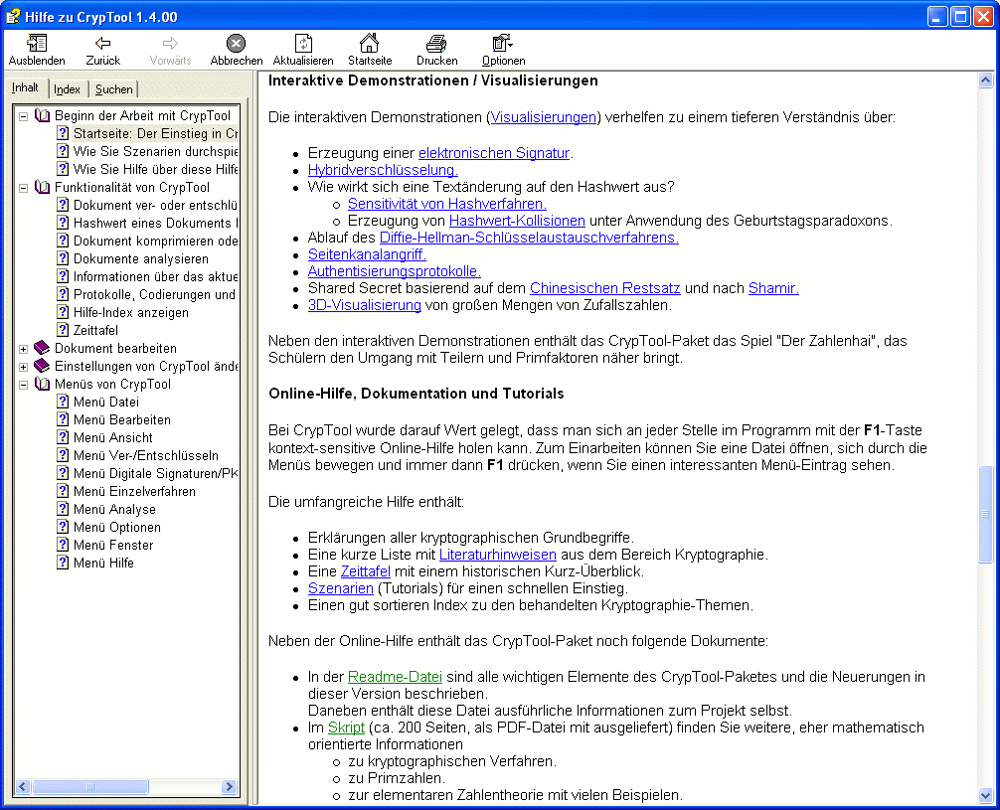

Eine Online-Hilfe gibt es zu allen Themen in CrypTool. Alle Hilfeseiten kann man auch ausdrucken.

Dabei kann man — wie in HTML üblich — durch Anklicken eines mit einer durchgezogenen Linie unterstrichenen oder farblich gekennzeichneten Themas zu diesem neuen Thema springen. Zum vorherigen Thema gelangen Sie über den Zurück-Knopf der Hilfe.
Außerdem kann über die Reiter Inhalt, Index und Suchen im linken Fensterteil nach Themen oder Begriffen suchen:
Die Einträge unter Inhalt und Index wurden von den Programmierern von CrypTool zusammengestellt. Die Volltextsuche unter Suche führt die HTML-Hilfe selbstständig durch.
Alle Reiter können mit dem Butten ganz links in der Iconleiste ein- und ausgeblendet werden.
Die Online-Hilfe enthält Informationen zu jedem Dialog und jedem Menüpunkt sowie den Symbolen der Symbolleiste.
Außerdem können verschiedene Tutorials / Szenarien / Beispiele (erreichbar über den Hilfeindex, Szenarien oder über das Skript) abgerufen werden, so zum Beispiel über Verschlüsselungsverfahren und über Primzahlen.
Öffnen der Online-Hilfe
Das Fenster mit Hilfe zum Programm CrypTool kann auf verschiedene Arten angefordert werden:
Schließen der Online-Hilfe
Das Hilfefenster kann mit der Tastenkombination Alt-F4 oder über den Menüeintrag Schließen (im Systemmenü ganz links in der Titelleiste) geschlossen werden.
Wenn Sie CrypTool selbst beenden, wird die geöffnete Hilfe ebenfalls beendet.